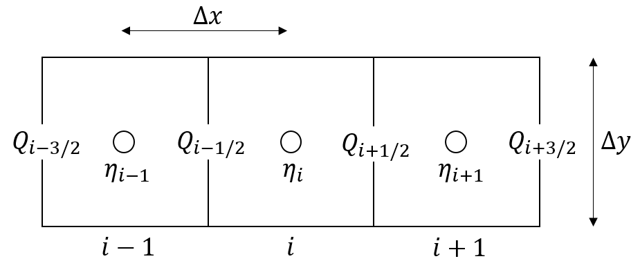

Local inertial
River and floodplain routing
The local inertial approximation of shallow water flow neglects only the convective acceleration term in the Saint-Venant momentum conservation equation. The numerical solution of the local inertial approximation on a staggered grid is as follows (Bates et al., 2010):
\[ Q_{t+\Delta t} = \frac{Q_t - g A_t \Delta t S_t}{(1+g\Delta t n^2 |Q_t| / (R_t^{4/3} A_t))} \]
where \(\SIb{Q_{t+\Delta t}}{m^3\ s^{-1}}\) is the river flow at time step \(t+\Delta t\), \(\SIb{g}{m\ s^{-2}}\) is acceleration due to gravity, \(\SIb{A_t}{m^2}\) is the cross sectional flow area at the previous time step, \(\SIb{R_t}{m}\) is the hydraulic radius at the previous time step, \(\SIb{Q_t}{m^3\ s^{-1}}\) is the river flow at the previous time step, \(S_t\) is the water surface slope at the previous time step and \(\SIb{n}{m^{-\frac{1}{3}}\ s}\) is the Manning’s roughness coefficient.
The momentum equation is applied to each link between two river grid cells, while the continuity equation over \(\Delta t\) is applied to each river cell:
\[ h^{t+\Delta t} = h^t + \Delta t \frac{\subtext{Q^{t+\Delta t}}{src} - \subtext{Q^{t+\Delta t}}{dst}}{A} \]
where \(\SIb{h^{t+\Delta t}}{m}\) is the water depthat time step \(t+\Delta t\), \(\SIb{h^t}{m}\) is the water depth at the previous time step, \(\SIb{A}{m^2}\) is the river area and \(\SIb{\subtext{Q}{src}}{m^3\ s^{-1}}\) and \(\SIb{\subtext{Q}{dst}}{m^3\ s^{-1}}\) represent river flow at the upstream and downstream link of the river cell, respectively.
The model time step \(\Delta t\) for the local inertial model is estimated based on the Courant-Friedrichs-Lewy condition (Bates et al., 2010):
\[ \Delta t = \alpha \min\left(\frac{\Delta x_i}{\sqrt{gh_i}}\right) \]
where \(\sqrt{gh_i}\) is the wave celerity for river cell \(i\), \(\SIb{\Delta x_i}{m}\) is the river length for river cell \(i\) and \(\alpha\) is a coefficient (typically between \(0.2\) and \(0.7\)) to enhance the stability of the simulation.
In the TOML file the following properties related to the local inertial model can be provided for the sbm and sbm_gwf model types:
[model]
river_routing = "local_inertial" # default is "kinematic_wave"
river_local_inertial_flow__alpha_coefficient = 0.5 # alpha coefficient for model stability (default = 0.7)
river_water_flow__froude_limit_flag = true # default is true, limit flow to subcritical-critical according to Froude number
river_water_flow_threshold__depth = 0.1 # water depth [m] threshold for calculating flow between cells (default = 1e-03)
floodplain_1d__flag = true # include 1D floodplain schematization (default = false)Two optional constant model boundary conditions for the river length \(\SIb{}{m}\) (default value of \(\SI{10,000}{m}\)) and depth \(\SIb{}{m}\) (default \(\SI{0}{m}\)) can be provided at a river outlet node (or multiple river outlet nodes) through the model parameter netCDF file, as follows:
[input.static]
model_boundary_condition_river__length = "riverlength_bc" # optional river length [m], default = 1e04
model_boundary_condition_river_bank_water__depth = "riverdepth_bc" # optional river depth [m], default = 0.0These boundary conditions and river bed elevation and Manning’s roughness coefficient are copied to a ghost node (downstream of the river outlet node) in the code.
The optional 1D floodplain schematization is based on provided flood volumes as a function of flood depth (per flood depth interval) for each river cell. Wflow calculates from these flood volumes a rectangular floodplain profile for each flood depth interval. Routing is done separately for the river channel and floodplain.
The momentum equation is most stable for low slope environments, and to keep the simulation stable for (partly) steep environments the river_water_flow__froude_limit_flag option is set to true by default. This setting limits flow conditions to subcritical-critical conditions based on the Froude number (\(\le 1\)), similar to Coulthard et al. (2013) in the CAESAR-LISFLOOD model and Adams et al. (2017) in the Landlab v1.0 OverlandFlow component. The froude number \(\mathrm{Fr}\) on a link is calculated as follows:
\[ \mathrm{Fr} = \frac{u}{\sqrt{gh_f}} \]
where \(\sqrt{gh_f}\) is the wave celerity on a link and \(u\) is the water velocity on a link. If the water velocity from the local inertial model is causing the Froude number to be greater than \(1.0\) , the water velocity (and flow) is reduced in order to maintain a Froude number of \(1.0\).
Reservoir models representing reservoirs, (natural) lakes or other water storage features can be included as part of the local inertial model for river flow (1D) and river and overland flow combined (see next section). Reservoir models are included as a boundary point with zero water depth for both river and overland flow. For river flow the reservoir model replaces the local inertial model at the reservoir location, and river flow \(Q\) is set by the outflow from the reservoir. Overland flow at a reservoir location is not allowed to or from the downstream river grid cell.
Overland flow (2D)
For the simulation of 2D overland flow on a staggered grid the numerical scheme proposed by de Almeida et al. (2012) is adopted. The explicit solution for the estimation of water discharge between two cells in the x-direction is of the following form (following the notation of Almeida et al. (2012)):
\[ \begin{split} Q_{i-1/2}^{n+1} = \frac{\left[ \theta Q_{i-1/2}^{n} +\frac{(1-\theta)}{2}(Q_{(i-3/2)}^{n} + Q_{(i+1/2)}^{n})\right]- g h_f \frac{\Delta t}{\Delta x} (\eta^n_i - \eta^n_{i-1}) \Delta y}{1+g\Delta t n^2 |Q_{i-1/2}^{n}|/(h_f^{7/3} \Delta y)} \end{split} \]
where subscripts \(i\) and \(n\) refer to space and time indices, respectively. Subscript \(i-\frac{1}{2}\) is to the link between node \(i\) and \(i-1\), subscript \(i+\frac{1}{2}\) is the link between node \(i\) and node \(i+1\), and subscript \(i-\frac{3}{2}\) is the link between node \(i-1\) and node \(i-2\). \(\SIb{Q}{m^3\ s^{-1}}\) is the water discharge, \(\SIb{\eta}{m}\) is the water surface elevation, \(\SIb{h_f}{m}\) is the water depth between cells, \(\SIb{n}{m^{-\frac{1}{3}} s}\) is the Manning’s roughness coefficient, \(\SIb{g}{m\ s^{-2}}\) is acceleration due to gravity, \(\SIb{\Delta t}{s}\) is the adaptive internal model time step, \(\SIb{\Delta x}{m}\) is the distance between two cells, \(\SIb{\Delta y}{m}\) is the flow width and \(\SIb{\theta}{-}\) is a weighting factor that adjusts the amount of artificial numerical diffusion. Below the staggered grid and variables of the numerical solution in the x-direction, based on Almeida et al. (2012):

The overland flow local inertial approach is used in combination with the local inertial river routing. This is a similar to the modelling approach of Neal et al. (2012), where the hydraulic model LISFLOOD-FP was extended with a subgrid channel model. For the subgrid channel, Neal et al. (2012) make use of a D4 (four direction) scheme, while here a D8 (eight direction) scheme is used, in combination with the D4 scheme for 2D overland flow.
In the TOML file the following properties related to the local inertial model with 1D river routing and 2D overland flow can be provided for the sbm and sbm_gwf model types:
[model]
land_routing = "local_inertial" # default is kinematic_wave
river_routing = "local_inertial" # default is kinematic_wave
land_local_inertial_flow__alpha_coefficient = 0.5 # alpha coefficient for model stability (default = 0.7)
land_local_inertial_flow__theta_coefficient = 0.9 # weighting factor that adjusts the amount of artificial numerical diffusion (default = 1.0)
land_surface_water_flow__froude_limit_flag = true # default is true, limit flow to subcritical-critical according to Froude number
land_surface_water_flow_threshold__depth = 0.1 # water depth [m] threshold for calculating flow between cells (default = 1e-03)The alpha coefficient, flow limitation according to the Froude number, and the adaptive model time step \(\Delta t\) are explained in more detail in the River and floodplain routing section of the local inertial model.
External inflows
External inflows \(\SIb{}{m^3\ s^{-1}}\) for example water supply or abstractions can to added the local inertial model for river flow (1D) and river and overland flow combined (1D-2D), as a static or cyclic parameter or as part of forcing. For example, cyclic inflow can be provided in the TOML file as follows:
[input.cyclic]
river_water__external_inflow_volume_flow_rate = "river_inflow"These inflows are added or subtracted as part of the continuity equation of the local inertial model. Abstractions are limited to a maximum of \(\SI{80}{\%}\) of the river storage. Negative external inflows are satisfied first, and the remaining river storage is available for internal abstractions as part of water demand and allocation computations.
Abstractions
Internal abstractions \(\SIb{}{m^3\ s^{-1}}\) from the river are possible when water demand and allocation is computed. The abstraction is set from the water demand and allocation module each time step. Abstractions are subtracted as part of the continuity equation of the local inertial model.
Multi-Threading
The local inertial model for river flow (1D) and river and overland flow combined (1D-2D) can be executed in parallel using multiple threads.
References
- Adams, J. M., Gasparini, N. M., Hobley, D. E. J., Tucker, G. E., Hutton, E. W. H., Nudurupati, S. S., and Istanbulluoglu, E., 2017, The Landlab v1.0 OverlandFlow component: a Python tool for computing shallow-water flow across watersheds, Geosci. Model Dev., 10, 1645–1663, https://doi.org/10.5194/gmd-10-1645-2017.
- de Almeida, G. A. M., P. Bates, J. E. Freer, and M. Souvignet, 2012, Improving the stability of a simple formulation of the shallow water equations for 2-D flood modeling, Water Resour. Res., 48, W05528, https://doi.org/10.1029/2011WR011570.
- Bates, P. D., M. S. Horritt, and T. J. Fewtrell, 2010, A simple inertial formulation of the shallow water equations for efficient two-dimensional flood inundation modelling, J. Hydrol., 387, 33–45, https://doi.org/10.1016/j.jhydrol.2010.03.027.
- Coulthard, T. J., Neal, J. C., Bates, P. D., Ramirez, J., de Almeida, G. A. M., and Hancock, G. R., 2013, Integrating the LISFLOOD-FP 2- D hydrodynamic model with the CAESAR model: implications for modelling landscape evolution, Earth Surf. Proc. Land., 38, 1897–1906, https://doi.org/10.1002/esp.3478.
- Neal, J., G. Schumann, and P. Bates (2012), A subgrid channel model for simulating river hydraulics and floodplaininundation over large and data sparse areas, Water Resour.Res., 48, W11506, https://doi.org/10.1029/2012WR012514.